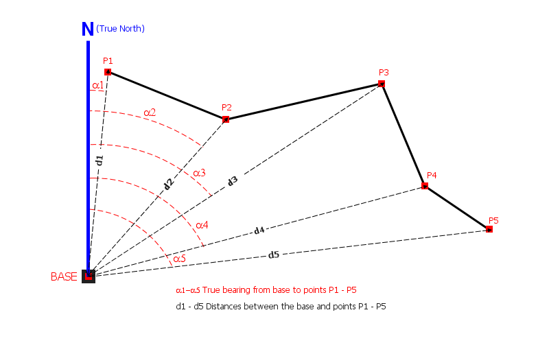

Project Point Method
The Project Point method (also known as Distance & Bearing) is a surveying technique that allows you to place features on the map by specifying a horizontal distance and true bearing from a known source location. Instead of relying solely on GPS to position a point, you establish a reference point and then calculate target locations using trigonometric projection - the same principle used in traditional surveying with a total station or laser rangefinder.

This method is particularly useful when:
- Surveying features that are not directly accessible (e.g. trees across a river)
- Using a laser rangefinder for accurate distance measurements
- Building geometry from a fixed base station using traditional surveying techniques
- GPS accuracy is insufficient for the required precision
- Android
- iOS
Enabling the Feature
The Project Point method must be enabled before use.
- Open Settings > Survey Settings
- Scroll to the Distance & Bearing Method section
- Toggle Distance & Bearing Method to On
Once enabled, tapping the Add button on the map screen will open the Project New Point dialog instead of placing a point directly at the map cursor or GPS location.
When you disable the Distance & Bearing Method, the rangefinder setting is also turned off automatically.
Project New Point Dialog
When you tap the Add button with the Distance & Bearing method enabled, the Project New Point dialog appears. It has three sections: source selection, measurement input, and a base point option.
Selecting the Source Location
Choose where to project the new point from:
| Source | Description |
|---|---|
| Current GPS / Map Cursor | Uses your current GPS position (if GPS is active) or the map cursor location |
| Last Point | Uses the coordinates of the last point you added (only shown if a point was previously added) |
| Base Location | Uses a named base point stored in the project (only shown if base points exist) |
When Base Location is selected, a dropdown appears allowing you to choose from the available base points in the current project.
Entering Measurements
Provide the following values:
- Distance to new point (meters) - the horizontal distance from the source to the target. Must be greater than zero.
- True Bearing (degrees) - the azimuth from the source to the target. Must be between 0 and 360.
The distance must be entered in meters and the bearing in degrees (true north). If your rangefinder reports values in other units, convert them before entering.
Setting as Base Location
Check Set as Base Location to save the projected point as a named base point. This allows you to use it as the source for future projected points, enabling you to chain measurements from one base to the next.
Working with Base Points
Base points are named reference locations stored within the project. They allow you to establish a fixed origin and project multiple points from it.
Creating a Base Point
- Tap Add to open the Project New Point dialog
- Check Set as Base Location
- To create a base at your current position, set both distance and bearing to 0
- Tap Save
The base point is automatically named (e.g. BASE 1, BASE 2) and stored in a dedicated base points table within the GeoPackage.
Using a Base Point
- Tap Add to open the Project New Point dialog
- Select Base Location as the source
- Choose your base point from the dropdown
- Enter the distance and bearing to the target
- Tap Save
The app remembers the last used base point, so it is pre-selected the next time you open the dialog.
Base Point Visibility
You can control whether base points are visible on the map and in layer management:
| Setting | Location | Effect |
|---|---|---|
| Show Base Points on Map | Settings > Survey Settings | Displays base point markers as a map overlay |
| Show Base Points in Layers | Settings > Survey Settings | Includes the base points table in the layer management screen |
Laser Rangefinder Integration
Mapit GIS supports Bluetooth laser rangefinders that can automatically populate the distance and bearing fields in the Project New Point dialog.
Supported Devices
| Device | Measurements Provided |
|---|---|
| Laser Technology TruPulse 360B | Distance, azimuth, inclination, slope distance |
| Trimble LaserAce 1000 | Distance, azimuth, inclination |
| CEM iLDM-150 | Distance, slope angle |
| NMEA-compatible devices | Distance, bearing (via standard NMEA sentences) |
Pairing a Rangefinder
- Pair the rangefinder with your Android device via Bluetooth Settings on your device
- In Mapit, go to Settings > Survey Settings
- Ensure Distance & Bearing Method is enabled
- Toggle Bluetooth Rangefinder to On
- Select your paired device from the list
On Android 12 and later, the app requires the Nearby Devices (Bluetooth) permission. If you deny the permission, the rangefinder toggle is automatically turned off.
Using the Rangefinder
Once paired, take a measurement with the rangefinder. The distance and bearing fields in the Project New Point dialog are automatically populated with the received values. If the rangefinder provides inclination data, the app also calculates:
- Slope distance from the horizontal distance and vertical angle
- Altitude of the projected point based on the base elevation and vertical angle
Inclination and Height Calculation
When a rangefinder provides an inclination (vertical angle), the app performs additional calculations:
- Height difference = horizontal distance x tan(inclination angle)
- Target altitude = base elevation + height difference
- Slope distance = horizontal distance / cos(inclination angle)
These values are stored with the point and can be included in exports.
Exporting Rangefinder Data
By default, exported features only include the projected coordinates. To include the full measurement details, enable the export option:
- Go to Settings > Survey Settings
- Toggle Export range finder measurement details to On
When enabled, the following additional fields are added to exported point features:
| Export Field | Description |
|---|---|
baseLat | Latitude of the source (base) location |
baseLon | Longitude of the source (base) location |
baseElev | Elevation of the source (base) location |
tgtHorizontalDistance | Horizontal distance to the target (meters) |
tgtBearing | True bearing to the target (degrees) |
tgtSlopeDistance | Slope distance to the target (meters) |
tgtVertAngle | Vertical angle / inclination (degrees) |
These fields are only included for point geometry features. They are available in all export formats (GeoJSON, KML, GPX, CSV, Shapefile).
Step-by-Step Example
Here is a typical workflow for surveying features using the Project Point method:
- Enable the feature in Settings > Survey Settings > Distance & Bearing Method
- Create or select a layer to collect data into
- Establish a base point - tap Add, check "Set as Base Location", set distance and bearing to 0, and save
- Survey the first target - tap Add, select "Base Location", enter the measured distance and bearing, and save
- Continue surveying - repeat step 4 for each target, always referencing the same base point
- Move the base - if needed, create a new base point at a different location and continue from there
- Export with measurement data - enable "Export range finder measurement details" in Survey Settings before exporting
Survey Settings Reference
All settings related to the Project Point method are located in Settings > Survey Settings under the Distance & Bearing Method section:
| Setting | Default | Description |
|---|---|---|
| Distance & Bearing Method | Off | Master switch - enables the Project New Point dialog |
| Bluetooth Rangefinder | Off | Connect to a paired laser rangefinder via Bluetooth |
| Show Base Points on Map | Off | Display base point markers on the map |
| Show Base Points in Layers | Off | Include base points in layer management |
| Export range finder measurement details | Off | Add measurement fields to exported point features |
Related Topics
- Map Screen - Overview of the main map controls
- Configure the Survey - Set up your project and layers for data collection
- Manage Layers - Create and configure layers for your survey data
- Export Layers - Export collected data with optional rangefinder fields
The Project Point method is not currently supported on iOS. This feature is on the roadmap for a future release.